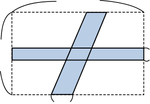
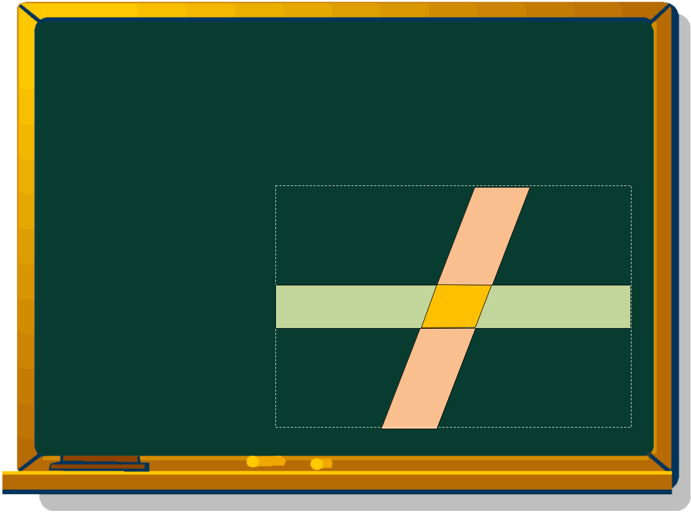

Latihan Tantangan
Hitunglah luas bagian yang berwarna.

cm2

10 cm
7 cm
1 cm
2 cm
Petunjuk
Alas × Tinggi
2 × 7
＋
Panjang × Lebar
＋ 1 × 10
−
Alas × Tinggi
− 2 × 1
＝ 14 ＋ 10 − 2
＝ 22
Jadi, luasnya adalah 22 cm2.
Bertumpuk

Perhatikan bentuknya baik-baik!
Ketika kita memperhatikan bentuknya, kita dapat melihat
bahwa bentuknya adalah jajar genjang.
Pikirkan cara menambahkan atau mengurangkan bentuk untuk menghitung luasnya!